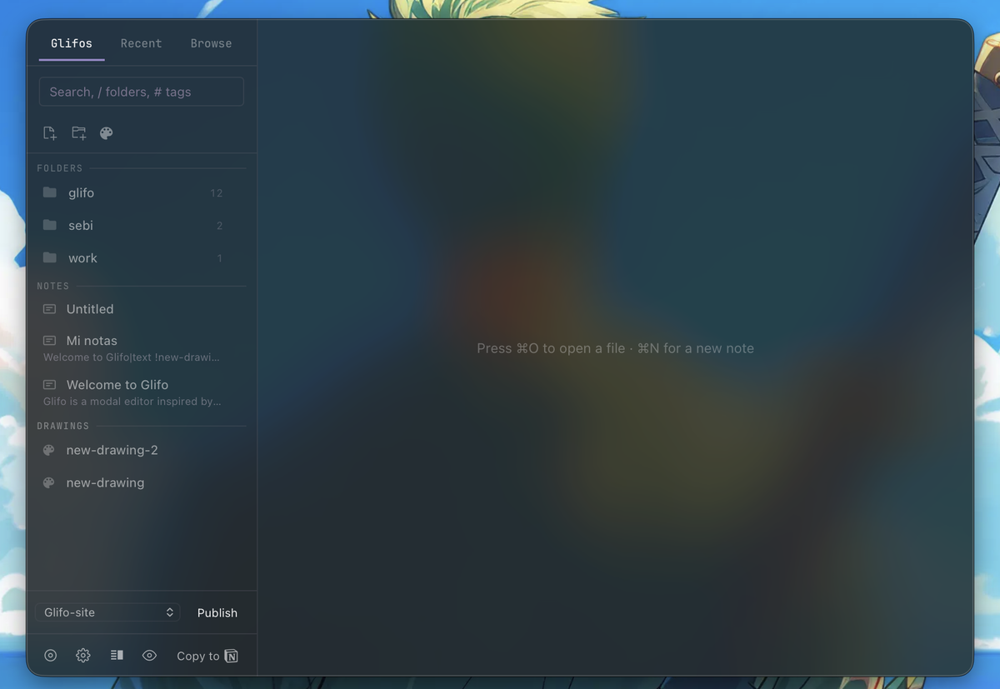

Frosted glass on macOS with NSVisualEffectView
Most "frosted glass" effects on the web are CSS hacks — a backdrop-filter: blur() that approximates transparency. On macOS, the real thing exists: NSVisualEffectView. Glifo uses it to create genuine system-level vibrancy behind the app window.

How NSVisualEffectView works
AppKit provides NSVisualEffectView as a view that composites the desktop content behind it with a blur and vibrancy material. When you set the blending mode to behindWindow, macOS blurs whatever is behind the app — other windows, your wallpaper, everything.
Glifo uses the UnderWindowBackground material (value 21), which gives the most natural system-level vibrancy. The view is always active — no toggle needed.
The implementation
Glifo inserts the vibrancy view as a subview of the NSWindow's contentView, positioned behind the WKWebView (see why we chose Tauri):
// Insert behind all siblings (NSWindowBelow)
let _: () = msg_send![content_view,
addSubview: effect_view
positioned: -1isize // NSWindowBelow
relativeTo: nil
];
The view is stored via an AtomicUsize so we can check if it already exists without reinserting it — which would break the z-order relative to the webview.
Opacity controls visibility
The CSS surface layer sits on top of the vibrancy view. The Opacity slider (20%–95%) controls how transparent this layer is — lower values let more vibrancy show through.
In dark mode, the surface is a semi-transparent black tint. In light mode, a semi-transparent white. Both let the native vibrancy breathe through the webview. The color system generates palette values that complement the vibrancy layer.
What we learned the hard way
Don't use setTag: on NSVisualEffectView. It throws an Objective-C exception with non-zero values. ObjC exceptions propagate as C++ exceptions through Rust, hit tao's extern "C" boundary, and trigger panic_cannot_unwind — an instant abort with no useful error message.
Don't remove and re-insert the view to change materials. The z-order relative to WKWebView isn't guaranteed to survive. Instead, update the existing view in place.
Don't use the window-vibrancy crate. Its remove+reinsert pattern causes exactly the z-order problem above. We replaced it with direct objc message sends.
Real vibrancy isn't a visual gimmick — it's spatial information. When you can see your desktop through the app, the window feels like it belongs to the system rather than sitting on top of it.